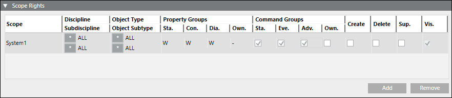
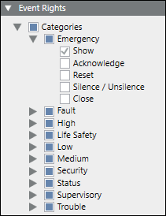
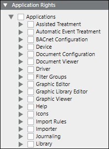

Adding a Security Group
- System Manager is in Engineering mode.
- System Browser is in Management View.
- Select Project > System Settings > Security.
- Select the Security tab.
- Click New
 .
. - The New Group dialog box displays.
- Do the following:
- For Group type, select User.
- In the Group name field, enter the group name—for example, Building X Group.
- Click OK.
- Expand Group Configuration.
- In the Configured Users expander, select the account name—for example, Building X User, and drag it to the User Members section.
- In the Scope Rights expander, do one or both of the following:
- Click Add to add the default system scope. Note that the default scope contains many “Include” rules, and may be too permissive for your setting. For more on defaults, see the section "Predefined System Scope Definition" in Engineering Reference -> Overview of Scopes.
- In Management View, drag one or more scopes from System Settings > Scopes > Building X Scope.
NOTE: The following pictured example of Scope Rights (below) supports display and command of all Property and Command Groups except ownership. For a detailed explanation of Scope settings, see "Scopes" in the Engineering Step-by-Step
- In the Event Rights expander, select the desired Event Rights.
NOTE: To send alarms to Building X for each category, Show must be selected for Desigo CC versions 5.0 and later. If you do not want alarms for a category, uncheck Show.
- Application Rights are not required.
NOTE: Selecting them will not change the behavior of the Building X Connector.
- Click Save
 .
.
For additional information about security groups, see User and User Group Administration.